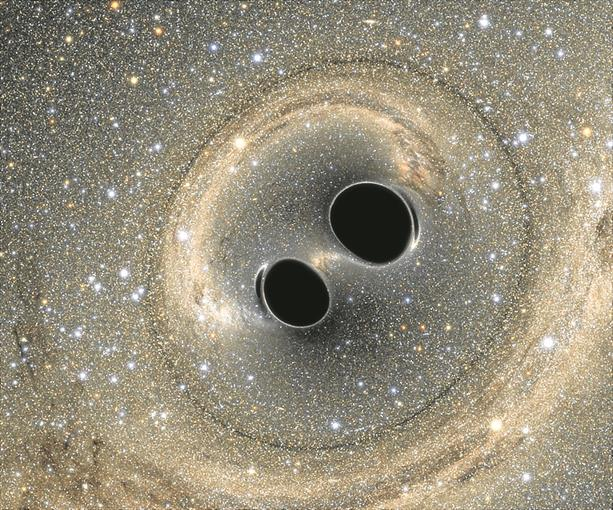
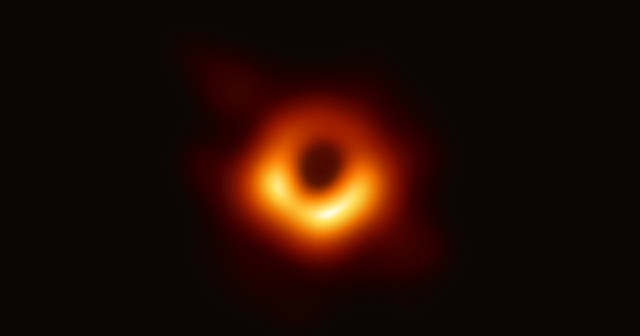

Black Hole
SupermassivosUm buraco negro supermassivo é uma classe de buracos negros encontrados principalmente no centro das galáxias. Ao contrário dos buracos negros estelares, negros supermassivos foram formados por imensas nuvens de gás ou por aglomeradosue são originados a partir da evolução de estrelas de massa elevada.
Os buracos de milhões de estrelas que colapsaram sobre a sua própria gravidade quando o universo ainda era bem mais jovem e denso.
A dificuldade em formar um buraco negro supermassivo se deve à necessidade de matéria suficiente para estar em um pequeno e suficiente volume. Esta matéria precisa ter um momento angular muito pequeno para que isto aconteça.
Normalmente o processo de crescimento envolve o transporte de uma grande doação inicial de um momento angular exteriormente, e isto parece ser o fator limite no crescimento de um buraco negro, e explica a formação de discos de acrescimento.
"O fato notável é que os valores desses números parecem ter sido muito bem ajustado para tornar possível o desenvolvimento da vida."
Stephen Hawking
- Classe: Supermassivos
- Massa: 100 mil M☉
- M☉: 1,9891.1030 kg
- M☉: Massa soloar
Acredita-se que buracos negros supermassivos existam nos centros de quase todas as galáxias. O buraco negro no centro da Via Láctea, denominado Sagittarius A*, tem uma massa de aproximadamente quatro milhões de vezes a massa solar, determinada diretamente a partir da observação de órbitas estelares.
Os buracos negros supermassivos possuem uma massa milhões ou até bilhões de vezes maior que a massa do Sol. A maioria dos buracos negros supermassivos já catalogados estão em forte atividade, ou seja, continuam atraindo matéria para si, aumentando ainda mais a sua massa.